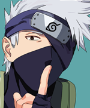
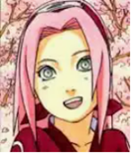
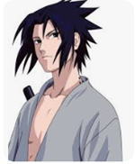

 Kakashi Hatake is the easygoing, smart leader of Team 7, consisting of Naruto Uzumaki, Sasuke Uchiha and Sakura Haruno. Kakashi had a dark past, but is unaffected by it as an adult. He was a very vital key for Naruto's success, training him to be a great ninja. Like Sasuke, Kakashi is also a master of the Sharingan, which he gained as a present from his late friend, Obito Uchiha, and can manipulate the "Lightning Blade," the technique which inspired Sasuke's Chidori. Facing Obito after learning he survived and became an apprentice of Madara's, Kakashi's original eye was restored late by Naruto who used the power of Sage of the Six Paths into series's second half, but he briefly regains the Sharingan when Obito aids him in spirit to help in the fight against Kaguya Ōtsutsuki. Kakashi succeeds Tsunade as the Sixth Hokage after the Fourth Great Ninja War have ended, with Naruto succeeding him as the Seventh Hokage years later
 Sakura Haruno is a member of Team 7. While creating the character, Kishimoto has admitted that he had little perception of what an ideal girl should be like.[1] As a child, Sakura was teased by other children because of her large forehead, a feature Kishimoto tried to emphasize in Sakura's appearance. She was comforted by Ino Yamanaka[12] and the two developed a friendship. However, as the two grew, they became increasingly distant due to their shared affection for Sasuke Uchiha. As a kunoichi, Sakura possesses superior strength to unleash her powerful punch towards the opponents when she is enraged by saying "Cha!" (しゃーんなろー！, Shānnarō!) and as a medical ninja, she can heal any wound. During the early moments of Part I, Sakura is infatuated with Sasuke and resents Naruto Uzumaki, although Sasuke views her as "annoying" and Naruto has feelings for her.[ch. 3] Her perception of Naruto eventually changes, however, and she comes to see him as a friend and partner, while her feelings for Sasuke grow into deep love. In the Japanese anime, her voice actress is Chie Nakamura, and she is voiced by Kate Higgins in the English adaptation.
 Sasuke Uchiha (うちは サスケ, Uchiha Sasuke) is Naruto Uzumaki's main rival and best friend. He was designed by Kishimoto as a "cool genius" since he felt this was an integral part of an ideal rivalry.[1] Sasuke's older brother, Itachi Uchiha, killed the rest of their clan.[ch. 224] Because of this, Sasuke's sole ambition is to avenge his clan and kill his brother, developing a cold and withdrawn personality, seeing people as tools to further his goals, although also gaining the affection of most of the girls he knows, especially Sakura Haruno, much to his annoyance. After he becomes a member of Team 7, Sasuke seems to begin considering his teammates precious to the point of risking his life to protect them, while focusing on revenge less than at the start of the series. When during the battle, Sasuke is a taijutsu expert and has mastered his ability to manipulate numerous fire techniques including known as "Fire Style: Fireball Jutsu", manipulating a fury of lightning known as "Chidori: One